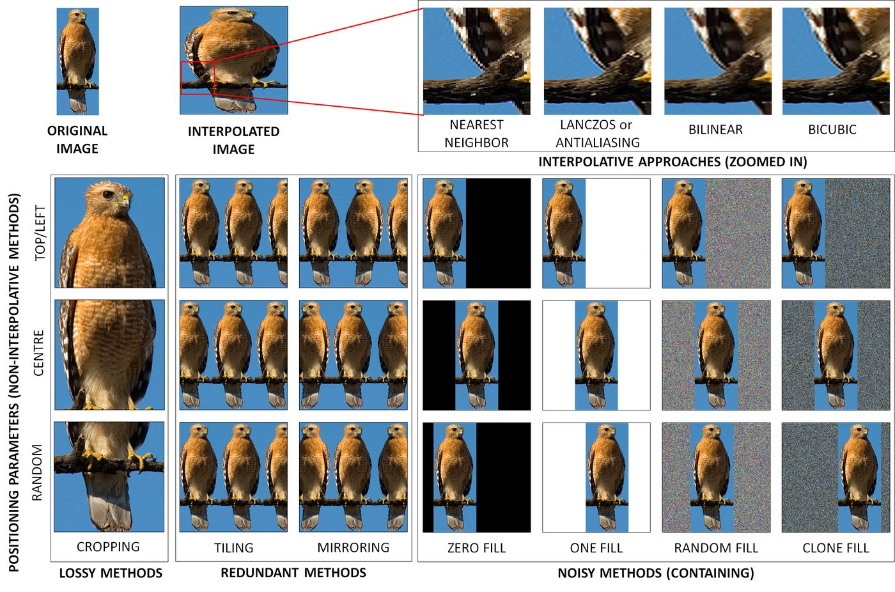
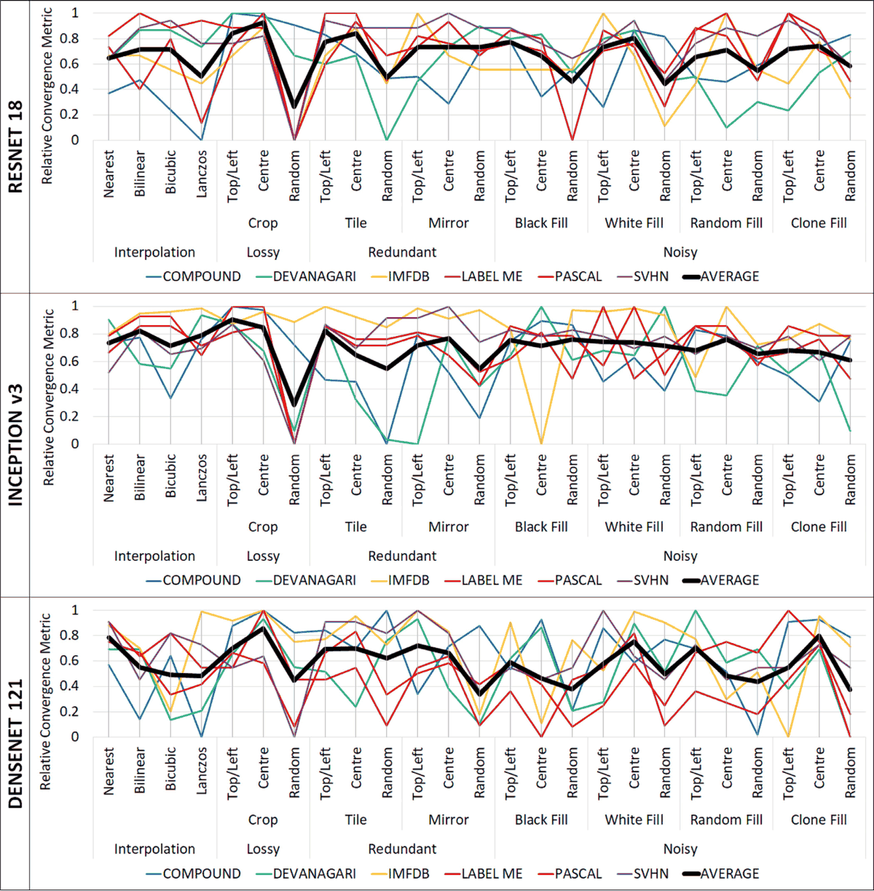

Cropping is the worst way to make a photo square for a neural network
Most image-recognition networks only accept pictures of one fixed size, usually a square. Real photos come in all shapes, so something has to give before a picture goes in. We tested 25 ways of turning a rectangular image into a square, on six datasets and three well-known networks, to see which ones help and which ones hurt.
The problem
A convolutional neural network (CNN) is the standard kind of network for pictures. It slides small filters over an image to pick out patterns. The layers near the end expect a fixed number of values, and that number depends on the size of the input. So a network built for 224 × 224 pixels cannot simply take a 4:3 photo. Inception-V3 expects 299 × 299 instead.
This causes trouble in practice. Images gathered by crowd-sourcing or web crawling come in many sizes. Phone cameras differ in resolution and in portrait or landscape mode. And a network pre-trained on ImageNet and reused for, say, surveillance footage has to be fed the shape it was trained on. The usual answer is to reshape the picture first. How much each way of reshaping matters to a CNN had not been explored much.
Twenty-five ways to make a square
We grouped the methods into four families, shown in the figure below on one photo of a bird.
- Interpolation stretches the whole image into a square, using nearest-neighbour, bilinear, bicubic or Lanczos resampling. All the content is kept, but the proportions of objects are distorted and edges lose some quality. A white ball can start to look like an egg.
- Cropping cuts a square out of the image, from the top or left, the centre, or a random position. Shapes stay true, but the rest of the picture is thrown away.
- Redundant methods repeat the picture along its short side, either as tiles or as mirror images, until the square is full. These are rare in CNN work.
- Noisy methods shrink the picture to fit inside a square and fill the leftover space with black, white, random pixels, or pixels copied at random from the image itself (clone fill).

Positions matter for every method except interpolation. We tried the top or left edge, the centre, and a random position that changes with every training epoch. Counting those variants gives the 25 methods.
What we tested
We used six datasets: Bangla compound characters, Devanagari characters, street-view house numbers (SVHN), Indian movie faces (IMFDB), and objects cropped out of PASCAL and LabelMe photos. Each was split 3:1:1 into training, validation and test sets, with the same number of images per class. The networks were ResNet-18, Inception-V3 and DenseNet-121, with 11.7 million, 27.2 million and 8.0 million parameters (Table 3). Six datasets, three networks and 25 methods make 450 networks, each trained from scratch for 100 epochs, with a single run per setting.
Table 2 gives the size of each dataset. Bangla has 197 classes, Devanagari 111, IMFDB 100, LabelMe and PASCAL 20 each, and SVHN 10 (Table 2). We forced every dataset to have the same number of samples per class, so that an imbalance would not disturb training. For PASCAL we cut the objects out of the photos using the bounding boxes the dataset provides, and for LabelMe we kept the 20 most frequent object categories. The Bangla and Devanagari images are binary, IMFDB is slightly skewed towards the red channel and SVHN has a stronger blue channel.
| Dataset | Classes | Training | Validation | Testing | Total |
|---|---|---|---|---|---|
| Bangla | 197 | 14,775 | 4925 | 4925 | 24625 |
| Devanagari | 111 | 11766 | 3885 | 3885 | 19536 |
| IMFDB | 100 | 12,000 | 4000 | 4000 | 20000 |
| LABEL ME | 20 | 6000 | 2000 | 2000 | 20000 |
| PASCAL | 20 | 8160 | 2720 | 2720 | 13600 |
| SVHN | 10 | 31,020 | 10,340 | 10,340 | 51700 |
Raw accuracy varies a lot between datasets, so we scaled the test accuracy of each dataset to run from 0 (worst method) to 1 (best method). We did the same for how many epochs a network needed to reach its lowest validation loss. We did not aim for record accuracy, only a fair comparison.
What we found
Randomised positioning gave better test accuracy than fixed positions, in all three networks, though it took longer to converge. Seeing a different framing each epoch acts like data augmentation, which means making new training examples out of old ones. The effect was clearest for the natural-object datasets IMFDB, LabelMe and PASCAL.
Mirroring beat tiling on test accuracy. In ResNet-18 and Inception-V3 it also converged more slowly, which we put down to the same augmenting effect. We advise against mirroring for characters and text, because a flipped letter may change meaning, although the results showed this only weakly. Interpolation did better than cropping but fell short of the other families, especially on PASCAL, where stretching distorts the objects. Noisy methods did quite decently, but no fill method won consistently across the networks.

The network matters too. Inception-V3 and DenseNet-121 proved more tolerant of interpolation than the shallower ResNet-18. Nearest-neighbour interpolation was the weakest interpolation choice for ResNet and DenseNet, but not for Inception-V3. Chi-square tests at the 0.05 level showed that several choices, such as the interpolation technique and the position of the crop or fill, depend on the dataset (Table 4). The paper adds that the natural-object datasets reacted more to the choice of interpolation method than the character datasets did.
Results in more detail
So far we have talked about accuracy. We also measured how many epochs each network needed to reach its lowest validation loss, that is, how quickly it settled. The plot below turns this into a relative convergence metric for each dataset, where 1 stands for the method that settled in the fewest epochs and 0 for the one that needed the most.

Cropping methods converged faster than the other families. Within cropping the random position is the slow one, which fits the idea that a network needs longer when it sees a different view each epoch. The paper warns against reading speed as quality. A network that reaches its lowest validation loss later is not necessarily worse, because it may simply be reaching a better optimum. For cropping, the fast convergence came with the lowest test accuracy.
The interpolation types behave differently. Nearest-neighbour keeps the sharpness and the overall shape of an object, while Lanczos is better at preserving edges and local detail. The difference is clearest on IMFDB, where Lanczos keeps the intricate details of faces and the network takes longer to reach a better optimum. LabelMe shows a similar trend. In Inception-V3 the parallel multi-scale convolutions mean that interpolation affects convergence much less. DenseNet also converges slowly with Lanczos, but that does not turn into higher test accuracy.
We also compared how often two trained networks give the same answer on the test images. The paper calls this agreement. Cropping methods showed much less correlation among their predictions than the other methods did (Fig. 10 of the paper).
Table 4 shows p-values from chi-square tests of whether a choice (the interpolation type, the crop position, the fill method and so on) depends on the dataset. The null hypothesis is that it does not. A p-value below 0.05 means the paper treats the choice as dependent on the dataset, and E-07 means a factor of 10−7. Some rows group the datasets into character sets (Bangla, Devanagari, SVHN) and natural sets (IMFDB, LabelMe, PASCAL) (Table 4).
| Parameters or variations | Datasets | ResNet 18 | Inception V3 | DenseNet 121 | All Models |
|---|---|---|---|---|---|
| Interpolation technique | All 6 datasets | 0.3989 | 0.0082 | 0.0557 | 0.0270 |
| Interpolation technique | Character and natural datasets | 0.1763 ↑ | 0.0008 ↑ | 0.0706 | 0.5774 |
| Positioning (cropping) | All 6 datasets | 7.5 E-07 | 6.2E-12 | 8.1 E-08 | 5.8 E-29 |
| Positioning (containing) | All 6 datasets | 4.9 E-17 | 0.2100 | 0.0639 | 4.94 E-08 |
| Filling methods (containing) | All 6 datasets | 0.2432 | 0.0159 | 0.2413 | 0.0024 |
| Filling methods (containing) | Character and natural datasets | 0.0464 ↑ | 0.0004↑ | 0.0293 ↑ | 0.0001 ↑ |
| Tiling or mirroring | All 6 datasets | 0.6752 | 0.3919 | 0.8984 | 0.4060 |
| Tiling or mirroring | Character and natural datasets | 0.2758 ↑ | 0.6094 | 0.7344 ↑ | 0.5953 |
| Reshaping methods | All 6 datasets | 7.7 E-06 | 1.9 E-07 | 0.5941 | 5.0 E-10 |
| All 25 variations | All 6 datasets | 1.1 E-17 | 6.5 E-29 | 4.3 E-12 | 4.1 E-58 |
The crop position gives very small p-values for all three networks, 5.8 E-29 over all models, so where to crop depends strongly on the dataset. Comparing all 25 variations gives p-values far below 0.05 for each network (Table 4). Grouping the datasets by type, the fill method for the containing methods gives 0.0464, 0.0004 and 0.0293 for the three networks (Table 4). The paper's reading is that character datasets have more holistic structural features, while natural objects have delicate details.
Discussion
We conclude that randomised processes took more time to converge but gave better accuracy. The reason, we think, is that they show the network different samples in every epoch, which acts like data augmentation and helps the model generalise, especially for natural objects such as IMFDB, LabelMe and PASCAL. Mirroring beat tiling for the same reason. Cropping was the worst of the lot, because it keeps only part of the image and can miss essential features. We advise avoiding it unless there is a predefined norm about the region of interest. Interpolation was difficult with natural objects, whose aspect ratios matter for classification. The network also matters, since Inception-V3 and DenseNet-121 were more tolerant of interpolation than ResNet-18.
The study has limits that we state in the paper. Every result is a single run, because averaging over multiple runs for 450 networks would take a huge amount of time. All networks were trained from scratch, with no pre-training or domain adaptation. The main plots show scores scaled within each dataset, and the actual accuracies are in a supplementary figure (Fig. 11). We offer empirical evidence for choosing a method, not one answer for every case. The official code is on GitHub.
As future work we suggest extending this study to relate the internal dynamics of a network to the distribution of the data it sees, a topic where we note that many questions remain open.
Sources
The figures and tables listed here are taken from the paper cited at the top of this page; the numbers quoted in the text come from it too.
- Figures: Fig. 2, Fig. 8, Fig. 6
- Tables: Table 2: number of classes and samples in each dataset; Table 3: depth, parameter count and input size of the three networks; Table 4: p-values of chi-square tests of dependence between each choice and the dataset
Acknowledgements
This work is partially supported by the project sponsored by SERB (Government of India, order no. SB/S3/EECE/054/2016, dated 25/11/2016), and was carried out at the Centre for Microprocessor Application for Training Education and Research, CSE Department, Jadavpur University.
Cite the paper
Swarnendu Ghosh, N Das, M Nasipuri (2019). Reshaping inputs for convolutional neural network: Some common and uncommon methods. Pattern Recognition, Vol. 93, pp. 79–94 · Elsevier.
@article{ghosh2019reshaping,
author = {Ghosh, Swarnendu and Das, N and Nasipuri, M},
title = {Reshaping inputs for convolutional neural network: Some common and uncommon methods},
journal = {Pattern Recognition},
volume = {93},
pages = {79--94},
publisher = {Elsevier},
year = {2019},
doi = {10.1016/j.patcog.2019.04.009}
}